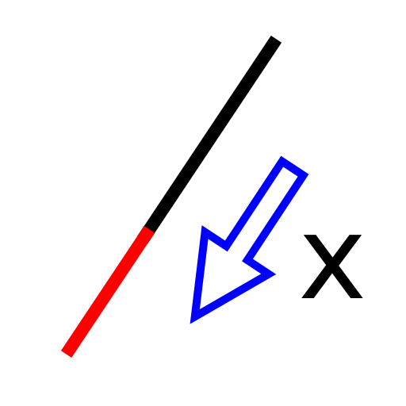

Verlängern / Verkürzen
Werkzeugleiste / Symbol:


Menü: Modifizieren - Verlängern / Verkürzen
Tastenkürzel: L, E
Kommandos: lengthen | shorten | trimamount | le
Beschreibung:
Dieses Werkzeug kann sowohl zum Verlängern als auch zum Verkürzen von Linien
und Kreisbögen um eine gegebene Distanz eingesetzt werden.
Vorgehensweise:
- Geben Sie die Distanz, um die Sie ein Objekt verlängern oder verkürzen
wollen in der Optionen Werkzeugleiste ein. Ein positiver Wert verlängert das
Objekt, ein negativer Wert verkürzt es. '5' zum Beispiel würde das Objekt um
fünf Zeichnungseinheiten verlängern.
- Wählen Sie das Objekt, das verändert werden soll in der Nähe des Endes an
dem die Veränderung erfolgen soll.
- Klicken Sie die rechte Maustaste oder drücken Sie zweimal Escape um das
Werkzeug zu beenden.